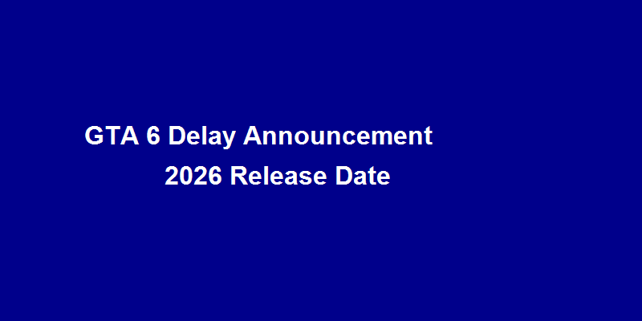

GTA 6 Officially Delayed to May 2026 - Rockstar Apologizes, Promises Quality First
Still counting down the days to play GTA 6 in Fall 2025? Bad news just dropped—Rockstar Games has officially announced that the game's release has been pushed back to May 26, 2026! This bombshell has sent shockwaves through the global gaming community, with Reddit and gaming forums exploding with frustrated reactions.
💔 The Reason: Rockstar Admits "More Time Needed for Polishing"
In the official statement, Rockstar founder Sam Houser personally apologized: "We know this decision will disappoint countless players who have been eagerly waiting, but to meet the quality standards that the GTA series deserves, we need additional time to perfect the gaming experience."
Insider sources reveal that the delay is primarily due to online mode server capacity testing not meeting expectations. Given that GTA 5 Online still struggles with server stability issues, Rockstar clearly wants to avoid repeating past mistakes.
🎮 Player Reactions: From Anticipation to Disappointment
"Waited 12 years, what's one more year?"—that's the rational players trying to console themselves. But many others took to social media to vent: "2026? My kids will be in college by then!"
The hardest hit are those who already pre-ordered, now staring at the "May 26, 2026" release date with disappointment. However, some conspiracy theorists speculate: Could this be a marketing strategy by Rockstar to generate more hype?
🤔 Is Delay Really a Bad Thing?
Remember the painful lesson from Cyberpunk 2077—rushing to market can ruin a game's reputation. Rockstar's decision to delay at least shows they prioritize quality over commercial interests. But the question remains—will gaming technology have evolved again by 2026?
📅 Industry Impact: Other Games Adjust Release Schedules
Interestingly, several game publishers have already started adjusting their own major title release schedules, afraid to compete with GTA 6. After all, nobody wants to be the "casualty" during "GTA 6 launch week"—this delay actually gives other games breathing room.
Analysts predict this delay could cost Take-Two billions in revenue, but Rockstar seems more concerned with long-term brand reputation.
💬 Community Discussion
What's your take on this delay? Are you understanding and supportive, or disappointed and frustrated? Share your thoughts in the comments!
💡 Discussion Topics:
- Can you accept delays for better game quality?
- What do you think the gaming landscape will look like in 2026?
- How long would you be willing to wait if it meant a significantly better experience?